Jugar videojuegos
Es una de las mejores formas que tengo para desconectarme de la rutina y divertirme un rato.
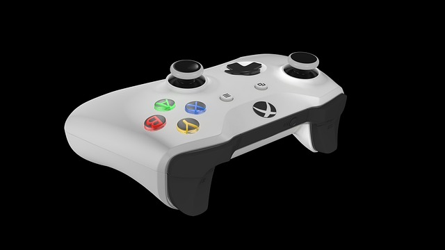
Jugar videojuegos ha sido uno de mis pasatiempos favoritos desde la infancia. Por ello, cuando busco distraerme, suelo recurrir a ellos para despejar la mente. También disfruto hacer ejercicio y escuchar música, actividades que hoy forman parte de mi día a día.
Es una de las mejores formas que tengo para desconectarme de la rutina y divertirme un rato.

Más que un pasatiempo, es una herramienta para despejar mi mente y tener un tiempo de calidad conmigo mismo.
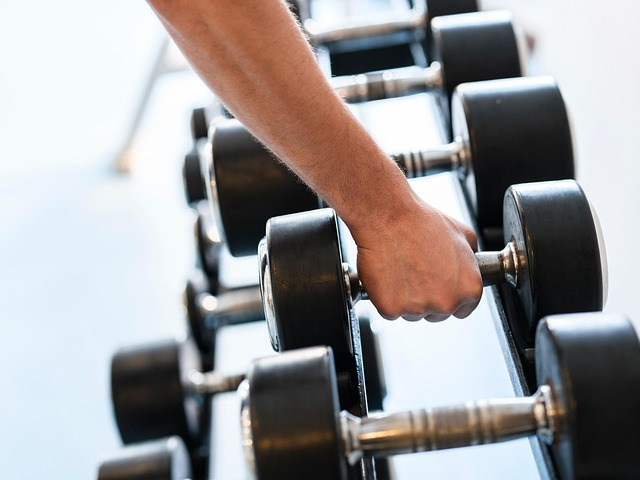
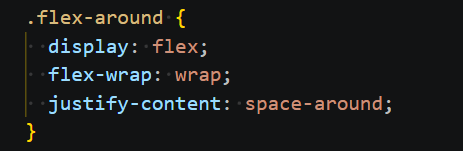
Disfruto conectar mi bocina y escuchar diversos géneros musicales, dependiendo totalmente de mi estado de ánimo.
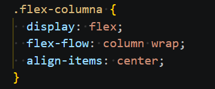
Esta actividad ha sido fundamental en mi vida. Al crecer como foráneo y ser una persona reservada, los videojuegos multijugador me brindaron la oportunidad de socializar y entablar amistades sólidas desde la comodidad de mi hogar.
Me apasiona la competencia y el proceso de mejorar mi nivel táctico. Disfruto probar diferentes armas y compartir partidas rápidas con amigos.
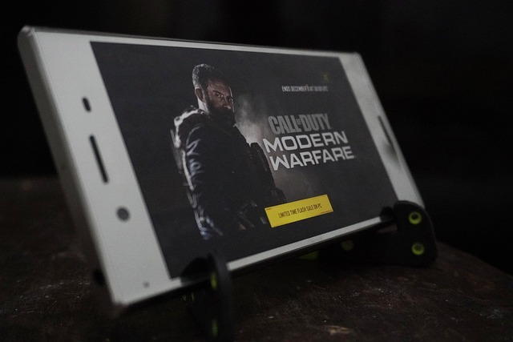
Valoro mucho el enfoque cooperativo de este modo. La estrategia y el trabajo en equipo necesarios para sobrevivir son lo que lo hace tan intenso y divertido.
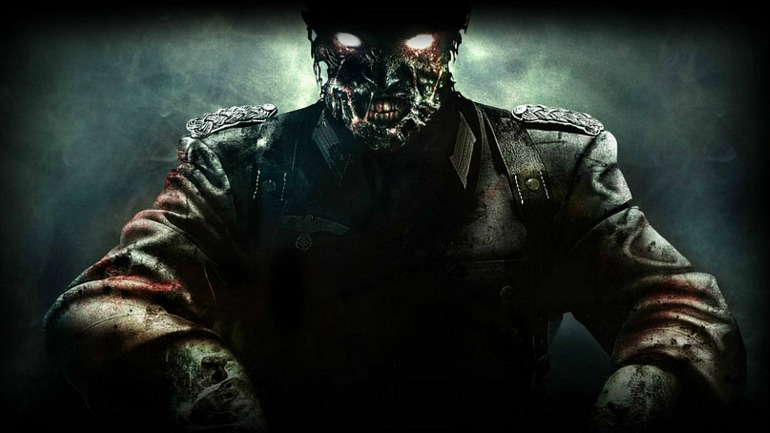
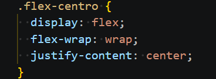
Es el espacio perfecto para la creatividad. Me permite explorar, construir y enfrentar retos a mi propio ritmo, ya sea en modo supervivencia o creativo.
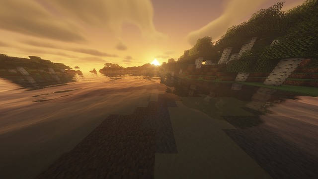
Me fascina la forma en que mezcla la historia real con la ficción. Su estilo de juego basado en el sigilo y la exploración histórica es de mis favoritos.

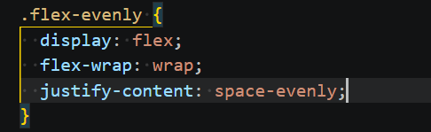
Mi camino en el deporte inició en la primaria con el Taekwondo. Años después, antes de entrar a la preparatoria, descubrí el gimnasio y la halterofilia, una disciplina técnica que capturó mi interés por el control y la fuerza que requiere. Aunque actualmente entreno de manera irregular, el ejercicio sigue siendo mi refugio principal para liberar estrés y retomar el equilibrio personal.
Un deporte de técnica pura que requiere máxima concentración y fuerza explosiva en cada levantamiento.
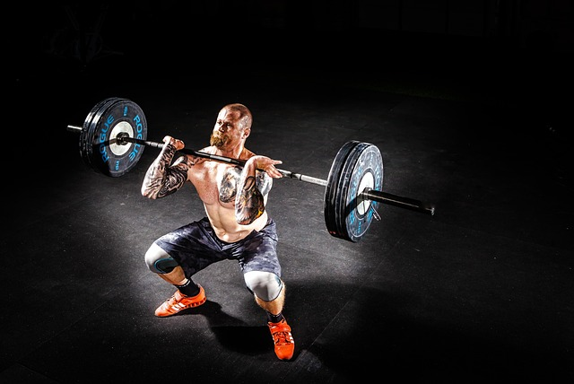
Fue mi primer acercamiento a la actividad física, enseñándome disciplina y constancia desde muy pequeño.
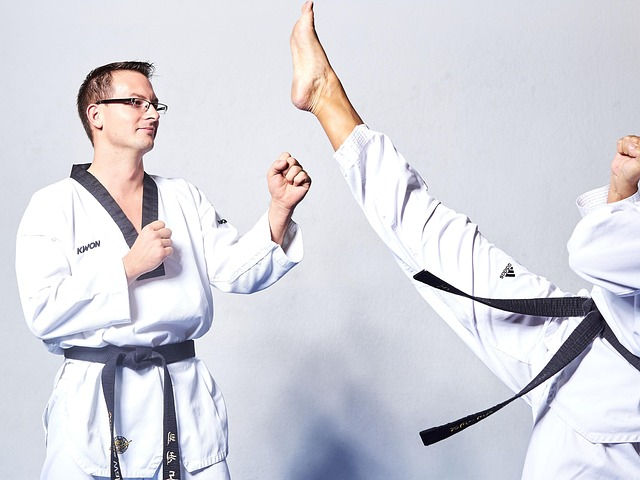
Es mi actividad actual; me permite entrenar a mi ritmo, mejorar físicamente y liberar las tensiones del día.
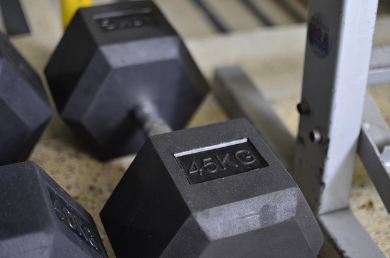
Me parece una disciplina increíble por el control corporal y la fuerza relativa que se desarrolla usando solo el propio peso.
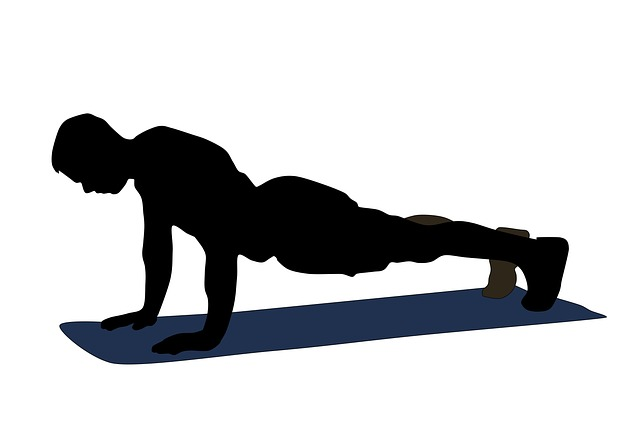
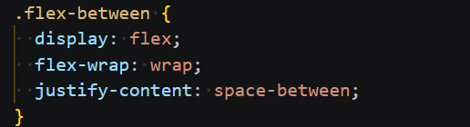
Es una parte esencial de mi rutina. Me acompaña en mis traslados a la facultad, durante mis entrenamientos y en mis momentos de descanso en casa. Es una actividad que realizo de forma casi automática para ambientar cada parte de mi día.
Su variedad de ritmos lo hace ideal para cualquier ocasión, desde canciones energéticas hasta momentos más relajados.
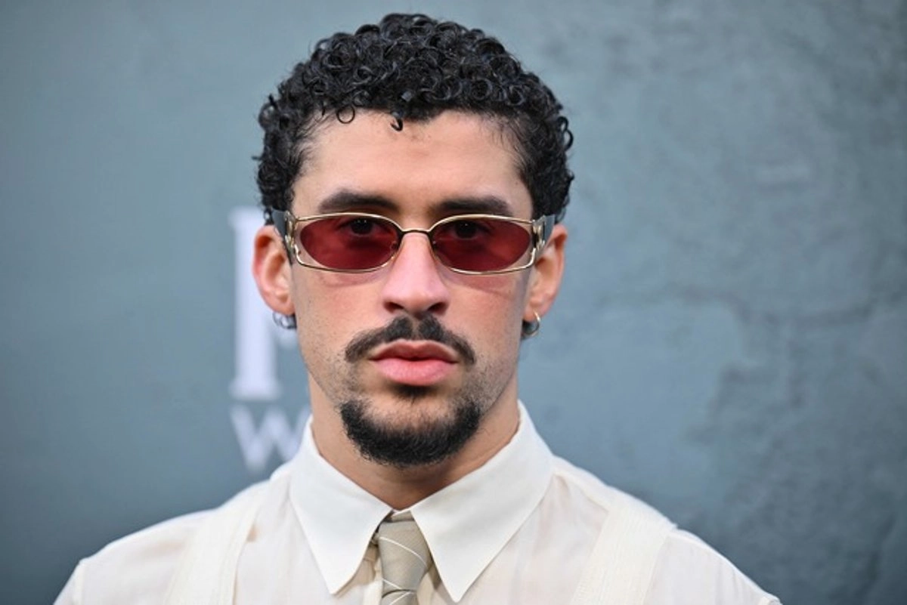
Suelo escucharlo cuando busco un ambiente más tranquilo y calmado gracias a su estilo melódico.
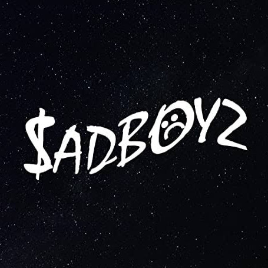
Me gusta su estilo único y la frescura que aporta con letras que se sienten más personales.
Es mi elección cuando necesito energía extra, especialmente durante mis sesiones de ejercicio en el gimnasio.